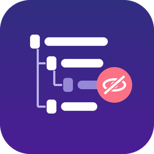
Show each person only the Odoo menus they need, in the order they want. Hide any menu for everyone, users, companies or security groups, change the application order, and give users favorite and recent menus in the top bar. No XML, no code, and your access rights stay exactly as they are.
Odoo 18.0 Community No extra dependency LGPL-3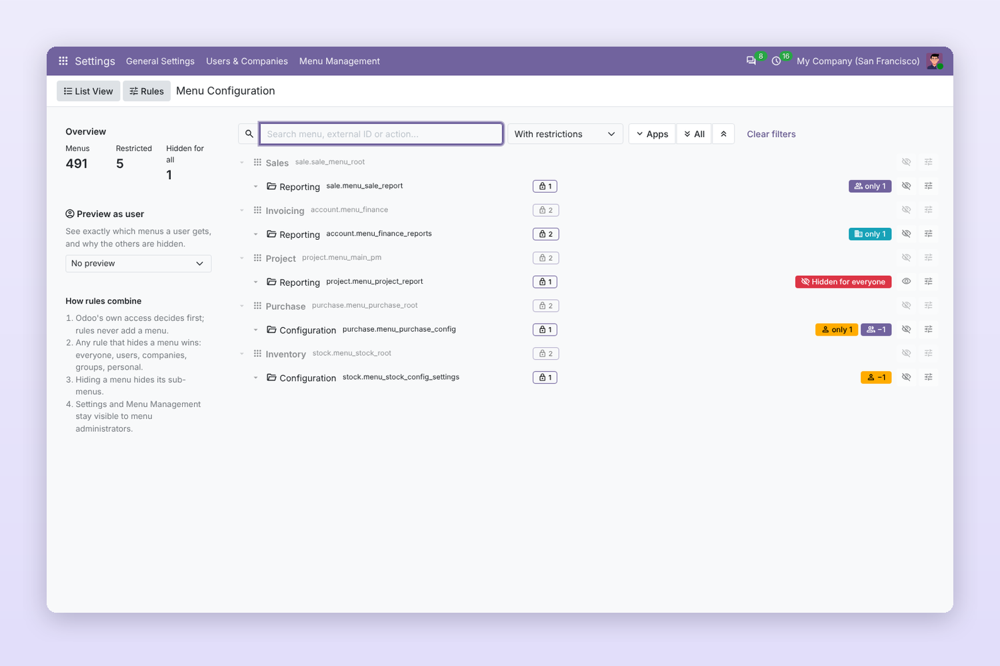
Everything is configured from one screen: Settings › Menu Management.
For Settings administrators (or users in the Menu Manager group).
After installing the app, go to Settings › Menu Management › Menu Configuration. You see every Odoo application with its menus, external IDs, actions and Odoo groups.
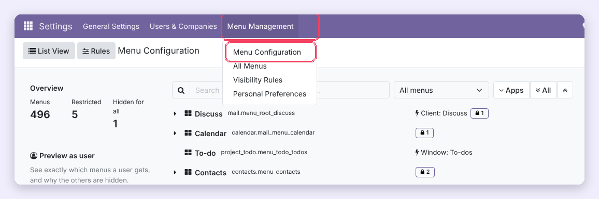
Expand an application or type in the search box (name, external ID or action). On the menu's row:
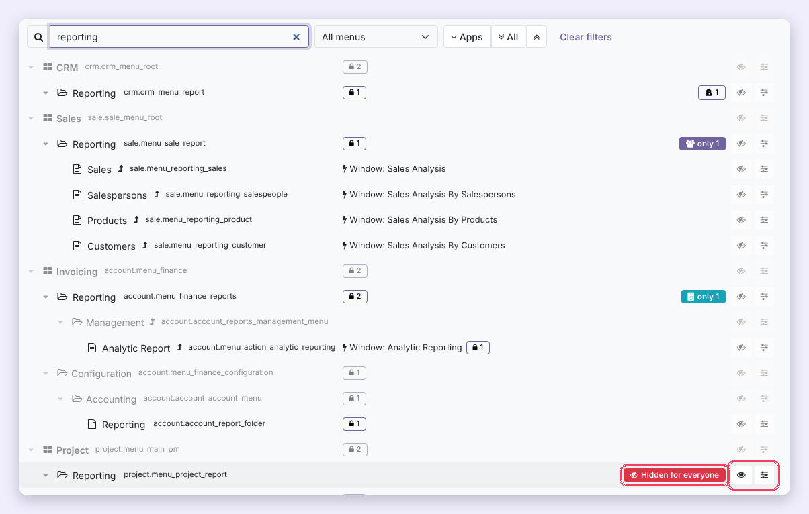
In the rule dialog, open the Users tab and fill Hide for Users or Show Only for Users. The Security Groups tab works the same way with groups. The dialog also shows the menu's Odoo Standard Groups so you know who Odoo already allows. Click Save.
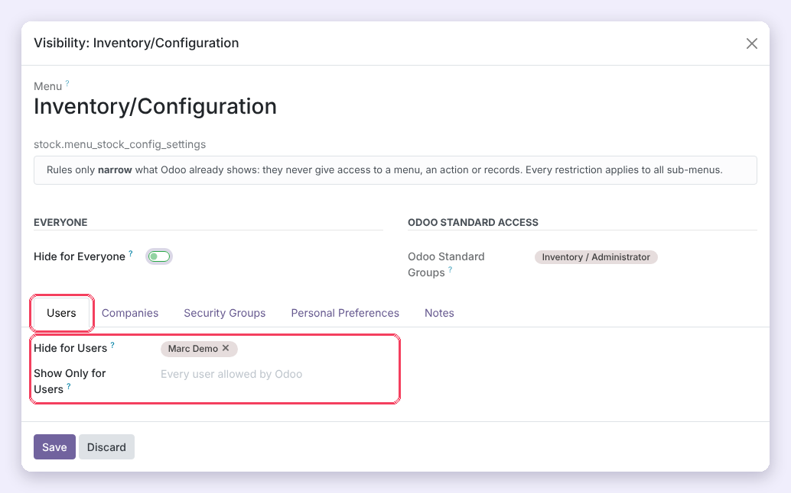
In the Companies tab, use Hide for Companies or Show Only for Companies. The menu then follows the companies selected in the company switcher. When several companies are active, the menu stays visible if at least one of them allows it.
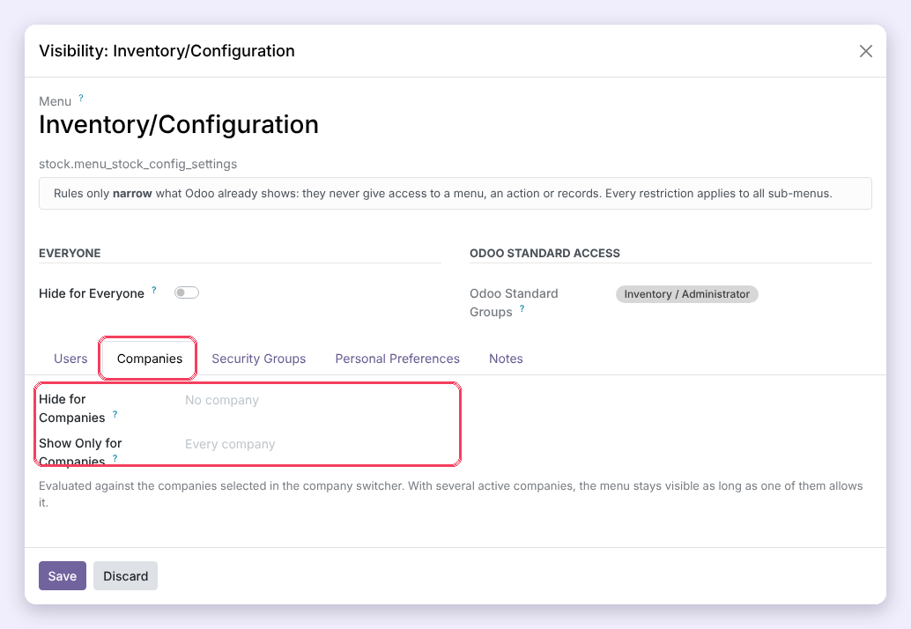
Choose a user (and tick their active companies) in the left panel. Every menu now shows Visible or the reason it is hidden: Odoo access rights, a user, company or group rule, a personal preference, or a hidden parent menu. Use the filter below the user to list only the hidden menus. Users see changes the next time they reload the page.
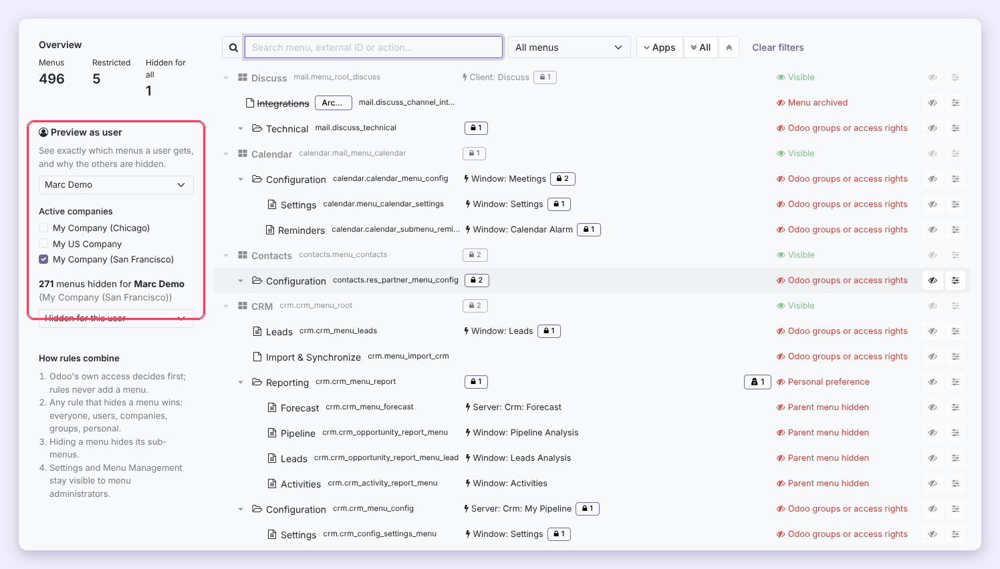
Optional. Personal choices only affect the user who makes them, and never change what they are allowed to do.
Open Settings › Menu Management › Personal Preferences, remove the Allowed filter and switch on Hide Menus Through Preferences for the users concerned. You also see which menus each user has hidden, and can reset them with the undo button. (The same switch is on the user form, tab Menu Visibility.)
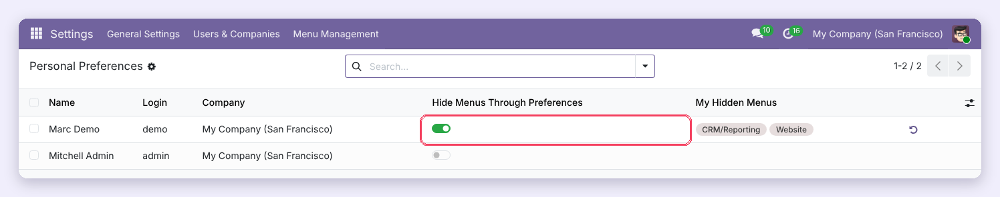
The user clicks their avatar (top right) and chooses My Menus. The entry only appears for users who have the permission.
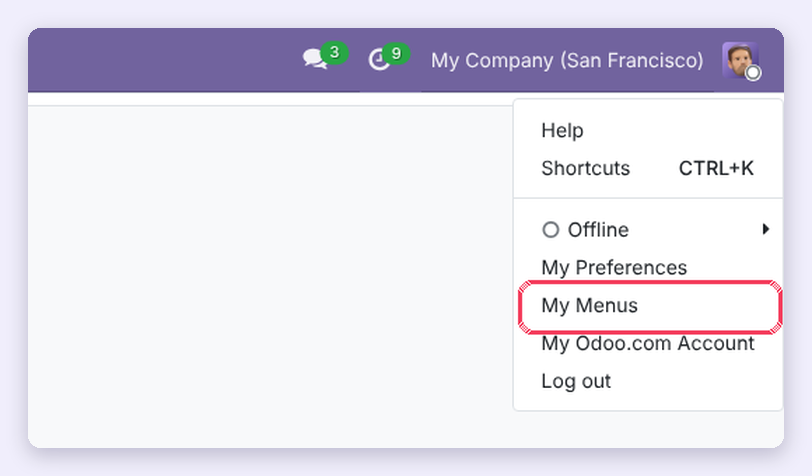
Switch on Hide for the menus not needed (hiding a section hides everything under it), then click Save and Reload. To bring menus back, switch them off again or click Show All. Reorder My Apps lets the user put their applications in their own order.
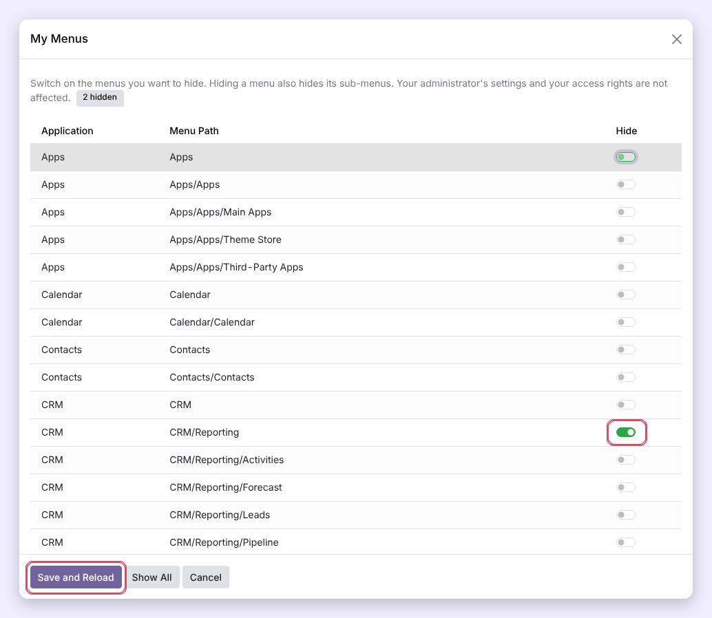
Hidden menus are also listed in Preferences › My Menus. Remove a menu from the list to show it again, then reload the page.
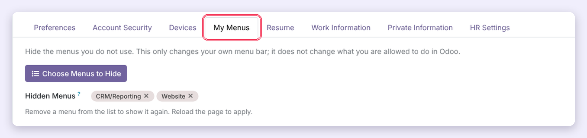
Help people get to their work faster. Every shortcut respects the visibility rules: a favorite or recent menu never shows something the user cannot open.
Go to Settings › Menu Management › Application Order, drag the applications into place with the handles and click Save and Reload. Reset Order goes back to Odoo's order.
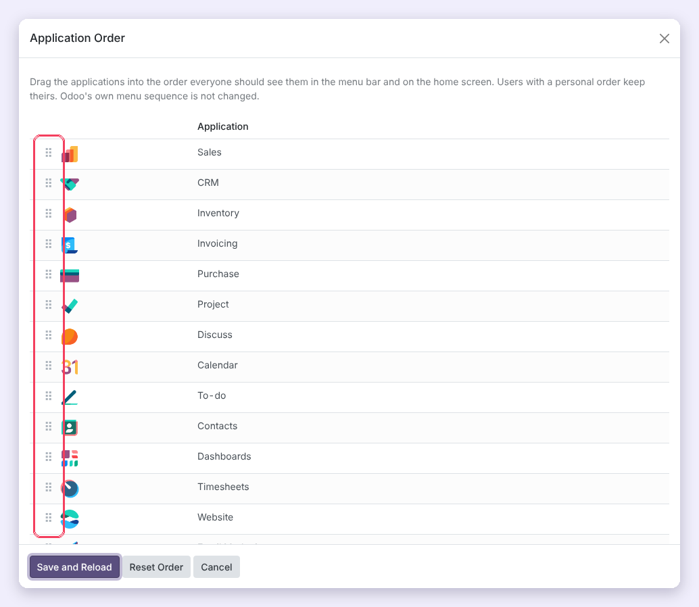
The applications menu and home screen follow the new order. Applications installed later appear after the ordered ones.
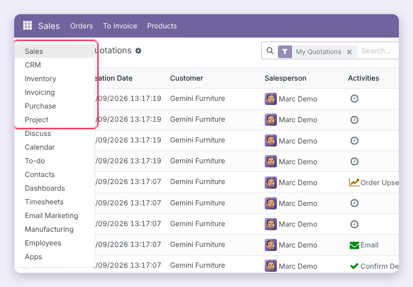
Open Settings › Users, choose a user and the Menu Management tab: hide menus for this user, switch on Favorite Menus, Recent Menus and Hide Menus Through Preferences, set their favorites, or click Application Order to give this user their own order. The same switches are in Settings › Menu Management › User Menu Settings for many users at once.
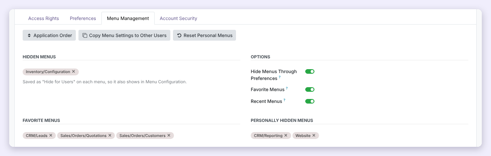
Users with Favorite Menus open any menu, click the star and Add “…” to favorites. Their favorites are one click away from anywhere in Odoo.
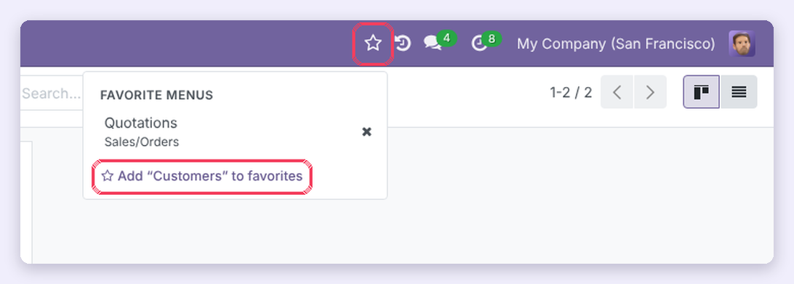
Click a favorite to open it; click × to remove it. Favorites follow the visibility rules: a menu hidden later simply disappears from the list.
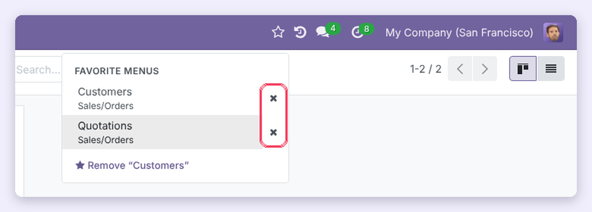
Users with Recent Menus find the last 10 menus they opened under the history icon, most recent first. The history is stored per user on the server, so it follows them to any device, and it is private: administrators cannot see it.
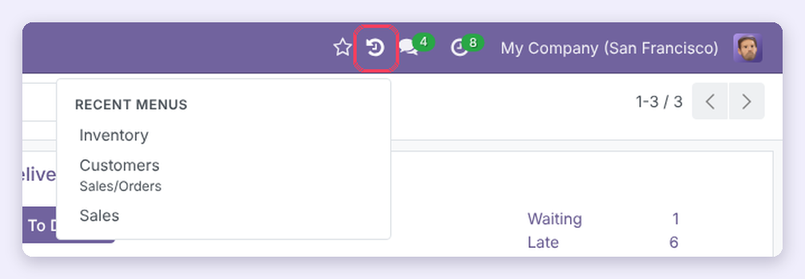
On a user's Menu Management tab, click Copy Menu Settings to Other Users, choose the users and what to copy: hidden menus, personal hidden menus, favorites, application order and options.
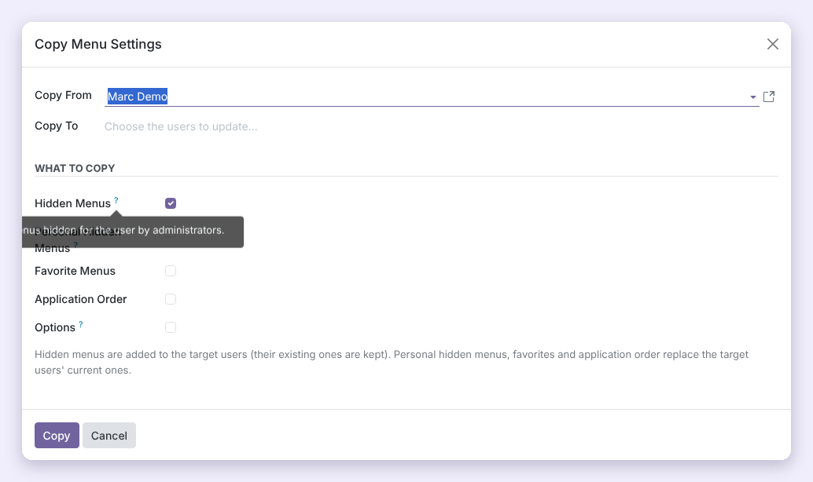
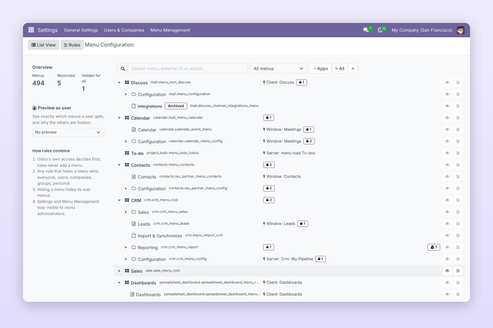
Menu tree: expand/collapse, external IDs, actions, Odoo groups (lock badge) and restriction badges.
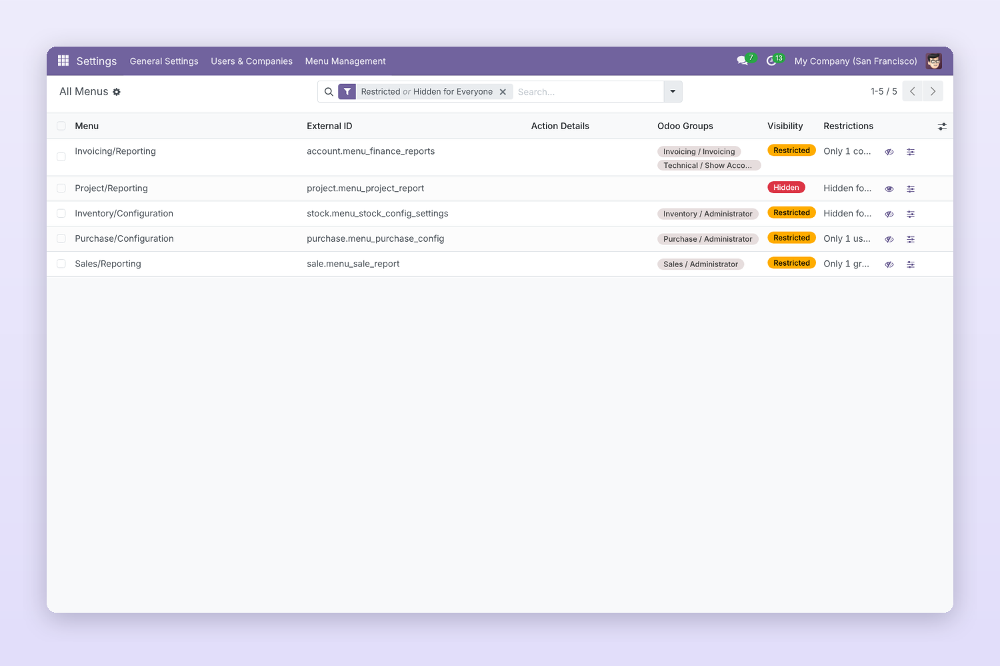
All Menus list: status badges, filters (hidden, restricted, users, companies, groups) and group by parent menu.
I put a user in "Show Only for Users" but they still don't see the menu.
The user also needs Odoo's own access to that menu (its groups and access rights). Use Preview as user to see the exact reason.
When do users see my changes?
At their next page reload, like any Odoo menu change.
How do I undo a restriction?
Click the eye button again, archive the rule in Visibility Rules, or open the menu in All Menus and click Remove Restrictions.
Does changing the application order change Odoo's menus?
No. The order is stored separately and applied when menus are loaded; Odoo's menu sequence is not modified, and uninstalling the app restores the original order.
Can administrators see what users opened?
No. Recent menus are private to each user, administrators included.
What happens on upgrade or uninstall?
Upgrades keep all rules and personal choices. Uninstalling removes the app's own data and every menu returns to Odoo's standard visibility.
Does it work with Odoo Enterprise?
The app only uses standard Odoo Community features and needs no Enterprise module. It has been tested on Odoo 18 Community.
Advanced Menu Management by DevsCodeSpace
Questions, customisation or support: devscodespace.com